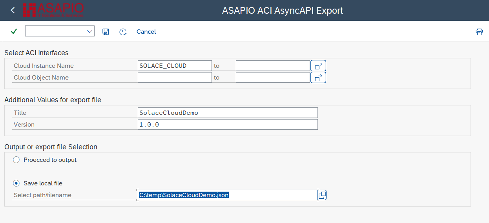

Reference
AsyncAPI® Support
Export a machine-readable AsyncAPI specification for your ASAPIO integration scenarios – describing channels, message schemas and platform bindings. Ready for use in API portals, contract tests, code generation and developer self-service tooling.
Overview
AsyncAPI provides a standard for defining event-driven APIs using asynchronous messaging. It is used by various tools to increase interoperability.
By providing an AsyncAPI export for interfaces configured in the ASAPIO Integration Add-on, the events from the SAP system can be easily integrated into API management solutions. These solutions serve as a central documentation hub for the available APIs in an architecture. The export makes it easy to get a correct schema definition of the configured payload structure and can combine it with the information of the target topic/queue/endpoint.
Note: New feature in release 9.32304. All interfaces defining the payload using DB/CDS views or the Payload Designer are supported. Interfaces using custom extractors / formatters or notification events are currently not supported.
Export AsyncAPI Specification
To export an AsyncAPI specification for your interfaces:

- Transaction: SA38
- Report:
/ASADEV/ACI_ASYNCAPI_EXPORT
Specify the following parameters:
- Cloud Instance: The target system for which to generate the specification
- Outbound Object: Optional – if empty, all configured interfaces are exported
- Title: A name for the AsyncAPI specification
- Version: Version string for the generated AsyncAPI specification
- Path / filename: Where to save the generated specification file
The export provides a file containing the specification for the selected interfaces. You can import this file into other tools supporting AsyncAPI.